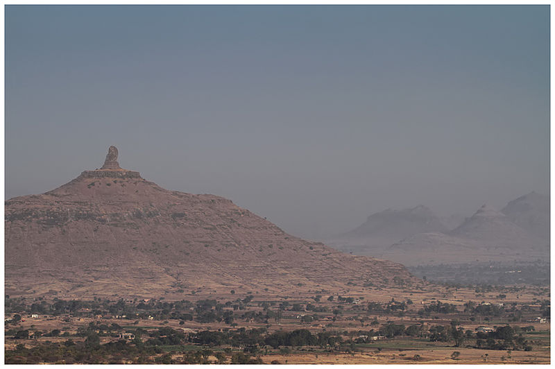
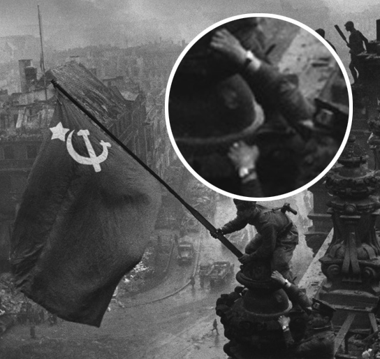
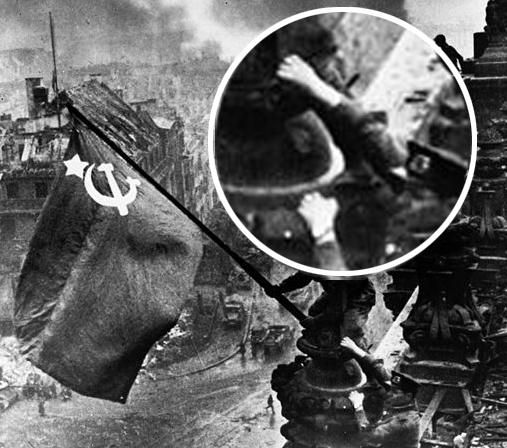

Sajjige Bajjil
In dedication to the flag Bearer's of Nitte's Quizzing
Created by Dayanand / @notsosleepy/Prelims
Round 1
1. Graph for What?
Signature of a Higgs boson from a simulated collision between two protons.
2. Vlad III was famously know as 'Vlad the Impaler' for impaling his victims. His surname inspired Bram Stoker's famous book. Name
Dracula
3
Bernd Mayländer. Safety car driver in Formula One.
4. X is believed to have been introduced by SherShah Suri. X means Silver in Sanskrit. ID X
Rupee
5. Alphonse "Al" Capone was an American gangster who led a Prohibition-era crime syndicate. Despite his illegitimate occupation, Capone became a highly visible public figure. He made donations to various charitable and was viewed by many to be a "modern-day Robin Hood". All Witnesses against him were silenced by bribe or fear. What did they finally arrest him for?
Tax Evasion
7. Connect
Nicolas Léonard Sadi Carnot/Carnot Cycle
8.This famous consumer product X has a 'b' missing in its name. One theory suggests that(Possibly wrong) FMCGs [Fast Moving Consumer Goods sector] are not authorized by food law to use ‘dictionary words’ for their food or beverages. It was bought by a foreign competitor in 1993 for US$60 million. At the time of the acquisition X's Market share was 85%
Clue
9. Connect
10. He worked as a steamboat pilot, insurance salesman, railroad fireman and farmer. He developed the "Original Recipe"
Colonel Harland Sanders
11. What connects all these people.
Harshad Mehta, Haji Mastan, Afzal Guru, L K Advani , Y. S. Jaganmohan Reddy, Yeddyurappa, Ramdev, Kanimozhi
Defence of these persons was taken up by Ram Jethmalani
12.
The first issue of Playboy December 1953
Round 2.
Short Visual Connect
+30/-20

+20/-10
+10/-0
- T- Tango
- F- Foxtrox
- D- Delta
- I- India
- A- Alpha
- C- Charlie
NATO phonetic alphabet
Audience Round
This landmark today looks diffrent than in the picture. What is the difference?
No sunglight Due to Sky Scrapers
The story of X goes back to 1884, to a young doctor armed with a degree in medicine and a burning desire to serve mankind. This young man, Dr. S.K. Burman, laid the foundations of what is today known as X India Limited. An umbrella name for a variety of products, ranging from hair care to honey, X has consistently ranked among India’s top brands. What is ‘X’?
Dabur
This town was previously known as Pandya nagari during Jain rule. Black granite is abundant in the area, and is in wide use in the local architecture. The name of the town is derived from black stone in Tulu.Some assert that the original name was 'elephant lake'. Its alternative name, Jain Thirtha, is the result of 300 years of Jain rule.
Karkala
It was shown in the UK by the BBC, where it achieved audience figures of 5 million, unheard of for a subtitled series being aired in the X is a successful television series which originally ran from 2 October 1988 to 24 June 1990. Each episode was approximately 45 minutes long. afternoon. It was also the first program broadcast on BBC Two after its 1991 revamp, but was also shown late at night on BBC 1 the previous year. X is?
Mahabharath
The Deccan Gymkhana of Pune drafted the first rules and regulations of this game in 1914. In 1919, the elliptical field dimensions were standardised. However, the field shape was changed to rectangular in 1935.National championships started in 1959. Eklavya Award and Rani Laxmibai Awards are given to the ‘Man and Woman of the Tournament’. Which sport?
Kho Kho
Expand Yahoo
YET ANOTHER HEIRARCHIAL OFFICIOUS ORACLE
KA 19 MC 6531
Principal NMAMIT
Round 3
1. X Group is a multinational conglomerate company headquartered in X Town. It comprises numerous subsidiaries and affiliated businesses. X's Industries include Heavy Industries, Engineering, Construction, Resort and Theme Park, surveillance, aeronautics, optoelectronics, automations and weapons technology. X's venture not mentioned in the list is why X is famous world over. ID X
Samsung
2. Some Basic Rules of Nomenclature
- Names can only be taken from a pre-approved list.
- Names alternate between male and female.
- Names are taken alphabetically from the list in chronological order. Thus the first one has a name that starts with A, next B and so on, using alphabets from A to W, excluding Q and U.
- There are six lists that rotate, one list per year.
- Only when the things get serious, that a name is retired, and another takes its place.
What on earth am I talking about?
Naming of Hurricanes
3. Joseph Bell was a famous Scottish lecturer at the medical school of the University of Edinburgh in the 19th century. In his instruction, Bell emphasized the importance of close observation in making a diagnosis. What is he best know for?
He is best known as an inspiration for the literary character Sherlock Holmes.
4. connect
Gerd Muller's record was broken by Lionel Messi for the most goals in a year(85/91)
- Kwame From Ghana, Africa
- Wheeler From Brooklyn, NY
- Linka From the Soviet Union
- Gi Hailing from China
- Ma-Ti From the Amazon of Brazil
5.What Connects?
6. You have seen a logo similar to this many times. It is the most popular product from this company. In 2012, celebrated 100 year anniversary
7. This powerful president was diagnosed with Cancer. When he failed to attend his scheduled inauguration on 10 January, the opposition asked who is running the country. The ruling party responded with a rally of more than 100,000 supporters, many carrying banners declaring "We are X." Id X
Hugo Chavez President Venezuela
 
8. Put Funda
The Un edited Image has the soldier wearing two watches, implying riot/stealing.
9. Alan Smithee is credited as the director of Hellraiser: Bloodline, Death of a Gunfighter, Twilight Zone: The Movie, Woman Wanted(incomplete list). Who is Alan Smithee.
Alan Smithee (also Allen Smithee) was an official pseudonym used by film directors who wish to disown a project.
10. Graph for what?
Youtube Views for Gangam Style
11. X is a vocal group created by German record producer Frank Farian. Originally based in West Germany, the four original members of the group's official line-up were Jamaican-born British singers Liz Mitchell (lead singer) and Marcia Barrett, Maizie Williams from Montserrat and Bobby Farrell from Aruba. The group was formed in 1975 and achieved popularity during the disco era of the late 1970s. The group has sold more than 150 million albums and singles worldwide with most sales in the UK and Germany. Id X..
Boney M
12. Kushal Pal Singh was under a fierce sun on May 12, 1981, in the wilderness beyond Delhi called Gurgaon, with just two keekar trees for shade and a deep well to quench his thirst. Singh had been sitting all by himself on a cot next to the well when a Jeep stopped as its engine had got overheated and the driver was looking for some water to cool it. Kushal Pal Struck a friendly conversation with the driver. During this time all land development in the capital city was taken over by the Delhi Development Authority. Singh convinced the driver that the laws constraining the sector needed to be liberalised. The driver was none other than Rajiv Gandhi. It was a turning point for not just Kushal Singhs Venture but also for urban development in the country. what is his venture?
DLF
Round 4
Buzzer
1. Id the building
Nation fisheries department Hyderabad
2. Id
Mount Rushmore
3. He graduated from NMAMIT, Nitte in 1992. He worked Briefly before founding X in 1996. His recent Venture is Global Delight which has come up with several Award winning products. Who?
Rohit Bhat of Robosoft(X)
4. Mark Pincus with his dog. Name his dog
Zynga
- 5. X’s company made the first prototype for the Aston Martin Vanquish which appeared in the James Bond movie Die Another Day.
- He has designed Vanity Van for many stars such as Sanjay Dutt, Shah Rukh Khan.
- He has also designed the car used in the movie Taarzan: The Wonder Car directed by Abbas-Mustan.
- In 2010 he designed a special version of Tata Nano
Who is he? What is the sports car he designed(India’s first sports car)?
DC Avanti/Dilip Chabria
6. Deflation in this country started in the early 1990s. On March 19, 2001, the Bank of X and the government tried to eliminate deflation in the economy by reducing interest rates. Despite having interest rates down near zero for a long period of time, this strategy did not succeed. In July 2006, the zero-rate policy was ended. In 2008, the X Central Bank still has the lowest interest rates in the developed world; deflation has still not been eliminated. Id X..
Japan
Long Connect
'Tere, kas sa kuuled mind?'
+100/-50
'What hath God wrought?'
+80/-40
'Don't be scared ... it is me. Love you and miss you'
+60/-30
'Merry Christmas'
+40/-20
'QWERTYUIOP'
+20/-10
'just setting up my twttr'
+10/-0
First Messages Sent by Various Mediums
Shout Outs to Keerthan, Pradeep Nayak, Harshith, Nivedita Nayak,Vignesh, Vigneshwar, Shreyus, Pawan and Rohit Shenoy for some Invaluable Help
Thats all Folks, Thank you